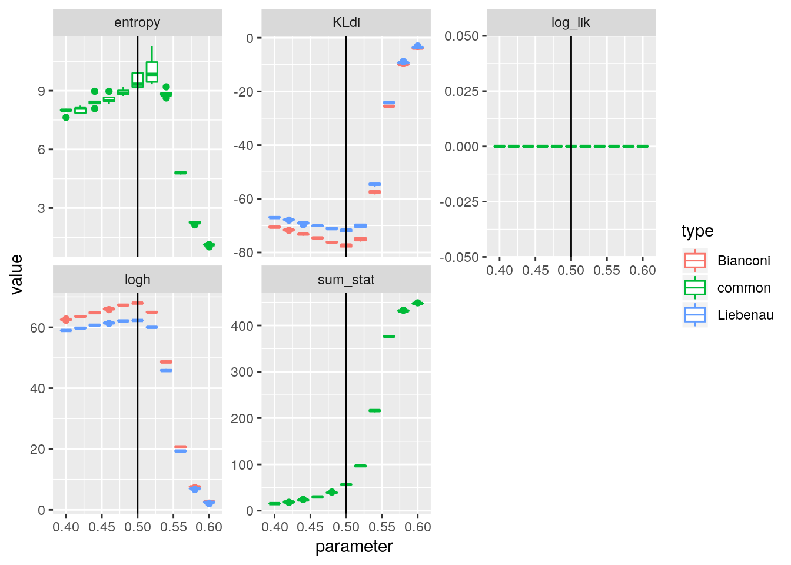
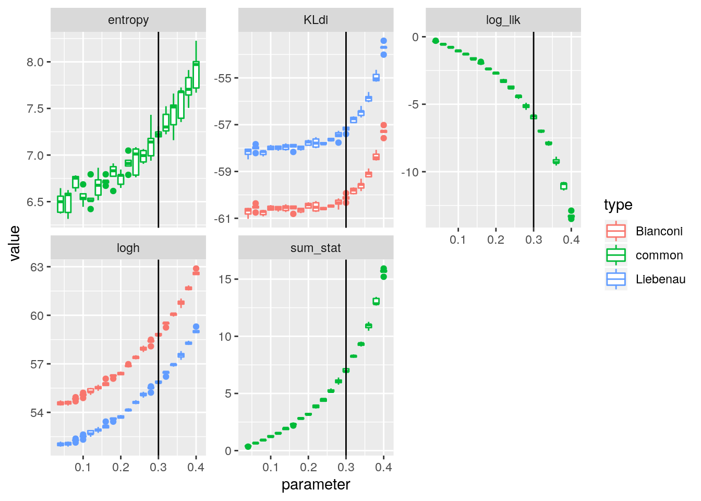

set.seed(1)
library(StartNetwork)
library(parallel)
library(ggplot2)
n = 15
replicates = 400mech_net_triangles <- purrr::partial(mech_net_triangles_n, n = !!n)
true_value <- 0.5
theta_p <- rep(seq(0.4, 0.6, by = 0.02), 5)
theta_s <- log(true_value/(1 - true_value))
cl <- parallel::makeCluster(parallel::detectCores())
g <- parallel::parLapply(cl, theta_p, StartNetwork::KL_ss, theta_s = theta_s, replicates = replicates, sorted = TRUE, mech_net = mech_net_triangles, lstat = function(x){length(igraph::triangles(x))/3}, mirror = TRUE, type = c("Bianconi", "Liebenau"))
parallel::stopCluster(cl)g_tidy <- StartNetwork::tidy_g(g)
ggplot(g_tidy) + aes(x = parameter, y = value, group = interaction(parameter, type), col = type) + geom_boxplot(outlier.shape = NULL, position = "identity") + facet_wrap( ~ key, scales = "free_y") +
ggplot2::geom_vline(mapping = aes(xintercept = true_value))## Warning: Removed 3 rows containing non-finite values (stat_boxplot).
mech_net_triangles <- purrr::partial(mech_net_triangles_n, n = !!n)
true_value <- 0.4
theta_p <- rep(seq(0.3, 0.5, by = 0.02), 5)
theta_s <- log(true_value/(1 - true_value))
cl <- parallel::makeCluster(parallel::detectCores())
g <- parallel::parLapply(cl, theta_p, StartNetwork::KL_ss, theta_s = theta_s, replicates = replicates, sorted = TRUE, mech_net = mech_net_triangles, lstat = function(x){length(igraph::triangles(x))/3}, mirror = TRUE, type = c("Bianconi", "Liebenau"))
parallel::stopCluster(cl)g_tidy <- StartNetwork::tidy_g(g)
ggplot(g_tidy) + aes(x = parameter, y = value, group = interaction(parameter, type), col = type) + geom_boxplot(outlier.shape = NULL, position = "identity") + facet_wrap( ~ key, scales = "free_y") +
ggplot2::geom_vline(mapping = aes(xintercept = true_value))mech_net_triangles <- purrr::partial(mech_net_triangles_n, n = !!n)
true_value <- 0.3
theta_p <- rep(seq(0.04, 0.4, by = 0.02), 5)
theta_s <- log(true_value/(1 - true_value))
cl <- parallel::makeCluster(parallel::detectCores())
g <- parallel::parLapply(cl, theta_p, StartNetwork::KL_ss, theta_s = theta_s, replicates = replicates, sorted = TRUE, mech_net = mech_net_triangles, lstat = function(x){length(igraph::triangles(x))/3}, mirror = TRUE, type = c("Bianconi", "Liebenau"))
parallel::stopCluster(cl)g_tidy <- StartNetwork::tidy_g(g)
ggplot(g_tidy) + aes(x = parameter, y = value, group = interaction(parameter, type), col = type) + geom_boxplot(outlier.shape = NULL, position = "identity") + facet_wrap( ~ key, scales = "free_y") +
ggplot2::geom_vline(mapping = aes(xintercept = true_value))
n <- 40
replicates <- 4000
mech_net_triangles <- purrr::partial(mech_net_triangles_n, n = !!n)
true_value <- 0.3
theta_p <- rep(seq(0.05, 0.35, by = 0.05), 5)
theta_s <- log(true_value/(1 - true_value))
cl <- parallel::makeCluster(parallel::detectCores())
g <- parallel::parLapply(cl, theta_p, StartNetwork::KL_ss, theta_s = theta_s, replicates = replicates, sorted = TRUE, mech_net = mech_net_triangles, lstat = function(x){length(igraph::triangles(x))/3}, mirror = TRUE, type = c("Bianconi", "Liebenau"))
parallel::stopCluster(cl)g_tidy <- StartNetwork::tidy_g(g)
ggplot(g_tidy) + aes(x = parameter, y = value, group = interaction(parameter, type), col = type) + geom_boxplot(outlier.shape = NULL, position = "identity") + facet_wrap( ~ key, scales = "free_y") +
ggplot2::geom_vline(mapping = aes(xintercept = true_value))n <- 60
replicates <- 20000
mech_net_triangles <- purrr::partial(mech_net_triangles_n, n = !!n)
true_value <- 0.3
theta_p <- rep(seq(0.05, 0.35, by = 0.05), 5)
theta_s <- log(true_value/(1 - true_value))
cl <- parallel::makeCluster(parallel::detectCores())
g <- parallel::parLapply(cl, theta_p, StartNetwork::KL_ss, theta_s = theta_s, replicates = replicates, sorted = TRUE, mech_net = mech_net_triangles, lstat = function(x){length(igraph::triangles(x))/3}, mirror = TRUE, type = c("Bianconi", "Liebenau"))
parallel::stopCluster(cl)g_tidy <- StartNetwork::tidy_g(g)
ggplot(g_tidy) + aes(x = parameter, y = value, group = interaction(parameter, type), col = type) + geom_boxplot(outlier.shape = NULL, position = "identity") + facet_wrap( ~ key, scales = "free_y") +
ggplot2::geom_vline(mapping = aes(xintercept = true_value))n = 15
replicates = 400
mech_net_triangles <- purrr::partial(mech_net_triangles_n, n = !!n)
true_value <- 0.2
theta_p <- rep(seq(0.04, 0.4, by = 0.02), 5)
theta_s <- log(true_value/(1 - true_value))
cl <- parallel::makeCluster(parallel::detectCores())
g <- parallel::parLapply(cl, theta_p, StartNetwork::KL_ss, theta_s = theta_s, replicates = replicates, sorted = TRUE, mech_net = mech_net_triangles, lstat = function(x){length(igraph::triangles(x))/3}, mirror = TRUE, type = c("Bianconi", "Liebenau"))
parallel::stopCluster(cl)g_tidy <- StartNetwork::tidy_g(g)
ggplot(g_tidy) + aes(x = parameter, y = value, group = interaction(parameter, type), col = type) + geom_boxplot(outlier.shape = NULL, position = "identity") + facet_wrap( ~ key, scales = "free_y") +
ggplot2::geom_vline(mapping = aes(xintercept = true_value))sessionInfo()## R version 3.6.1 (2019-07-05)
## Platform: x86_64-pc-linux-gnu (64-bit)
## Running under: Ubuntu 18.04.3 LTS
##
## Matrix products: default
## BLAS: /usr/lib/x86_64-linux-gnu/openblas/libblas.so.3
## LAPACK: /usr/lib/x86_64-linux-gnu/libopenblasp-r0.2.20.so
##
## locale:
## [1] LC_CTYPE=en_AU.UTF-8 LC_NUMERIC=C
## [3] LC_TIME=en_AU.UTF-8 LC_COLLATE=en_AU.UTF-8
## [5] LC_MONETARY=en_AU.UTF-8 LC_MESSAGES=en_AU.UTF-8
## [7] LC_PAPER=en_AU.UTF-8 LC_NAME=C
## [9] LC_ADDRESS=C LC_TELEPHONE=C
## [11] LC_MEASUREMENT=en_AU.UTF-8 LC_IDENTIFICATION=C
##
## attached base packages:
## [1] parallel stats graphics grDevices utils datasets methods
## [8] base
##
## other attached packages:
## [1] ggplot2_3.2.1 StartNetwork_1.1.4
##
## loaded via a namespace (and not attached):
## [1] Rcpp_1.0.3 pillar_1.4.2 compiler_3.6.1 tools_3.6.1
## [5] zeallot_0.1.0 digest_0.6.23 evaluate_0.14 lifecycle_0.1.0
## [9] tibble_2.1.3 gtable_0.3.0 pkgconfig_2.0.3 rlang_0.4.2
## [13] igraph_1.2.4.1 rstudioapi_0.10 yaml_2.2.0 xfun_0.11
## [17] withr_2.1.2 stringr_1.4.0 dplyr_0.8.3 knitr_1.26
## [21] vctrs_0.2.0 grid_3.6.1 tidyselect_0.2.5 glue_1.3.1.9000
## [25] R6_2.4.1 rmarkdown_1.18 farver_2.0.1 tidyr_1.0.0
## [29] purrr_0.3.3 magrittr_1.5 ellipsis_0.3.0 backports_1.1.5
## [33] scales_1.1.0 codetools_0.2-16 htmltools_0.4.0 assertthat_0.2.1
## [37] colorspace_1.4-1 labeling_0.3 stringi_1.4.3 network_1.15
## [41] lazyeval_0.2.2 munsell_0.5.0 crayon_1.3.4